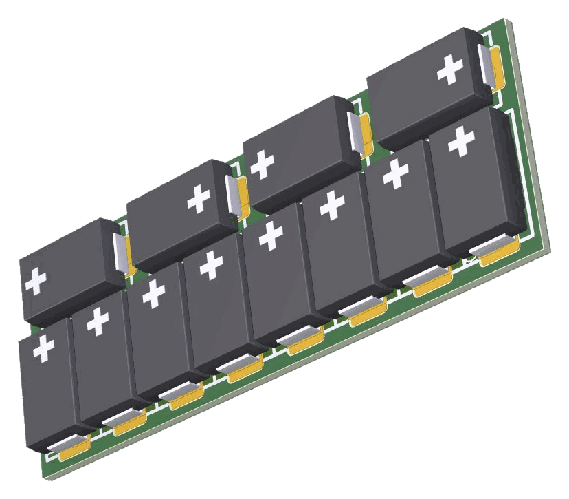
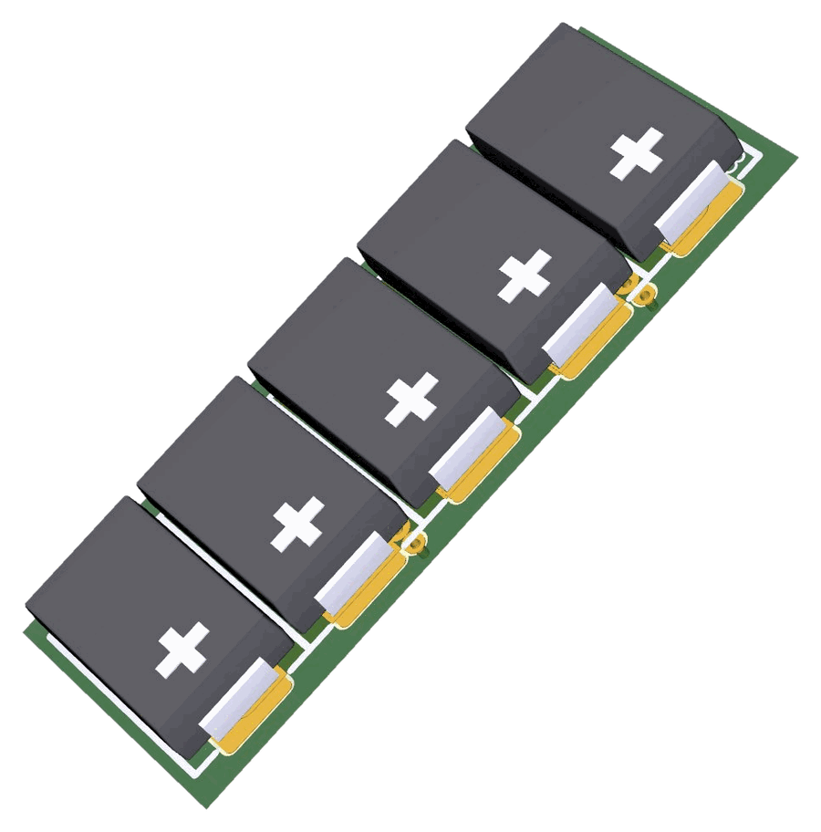

The NXT StayOn is a high-quality DCC keep-alive module designed to eliminate the frustrating stalls that occur when a locomotive loses contact with the track — on dirty rail, over unpowered turnout frogs, or across any brief interruption in power.
It works by storing energy in a bank of capacitors and releasing it instantly to keep your locomotive's decoder and motor running through those interruptions. The result is smooth, uninterrupted operation on any DCC layout, regardless of track or turnout condition.
The NXT StayOn is available in two versions: StayOn-H0 for H0 scale and StayOn-N for N scale. Both feature a hardware soft-start circuit using the Texas Instruments TPS22810 load switch IC, which limits inrush current during capacitor charging and prevents booster shutdowns. Both versions maintain full decoder programmability at all times.
Each board is available in multiple pre-assembled configurations — Full (both faces populated, 5.0 mm tall) or Slim (top face only, 3.0 mm tall) — so you can choose the right fit for your locomotive without any modification. See Section 5 for the full range.
Designed and assembled in South Africa to the highest standards, the NXT StayOn delivers professional-grade performance at a price that makes sense for every modeller.


The NXT StayOn connects to your DCC decoder via two solder pads on the board, marked + (positive) and − (ground). These pads accept fine enamelled copper wire or standard decoder lead wire. Before starting, identify the appropriate connection point on your decoder — most modern decoders provide dedicated capacitor or keep-alive pads. See Section 6 for decoder-specific guidance.
Ensure your DCC system is fully powered down before beginning. Never solder or connect wires while the track is live. If your system has a separate programming track, switch that off too.
Before soldering, verify that the SKU you have purchased fits the available space in your locomotive. See Section 5 for all SKU dimensions. If you are unsure, contact NXT Level Technology before starting — it is much easier to swap a board before any wiring is done.
Locate the two gold solder pads on the component side of the board. The pad marked + is the positive connection. The pad marked − is ground. These markings are printed on the PCB silkscreen alongside each pad.
Apply a small amount of solder to each pad and to the stripped ends of your connecting wire before joining them. This technique — known as tinning — ensures a clean, reliable solder joint and makes the final connection quick and neat. Keep the iron on each pad for no more than two to three seconds. It is advisable to apply a little liquid flux to the pads and wire beforehand — this helps the solder flow and gives a stronger, cleaner bond.
Connect + to + and − to −. Double-check polarity before touching the iron to the joint. Keep wires short — 30 to 50mm is usually sufficient. A clean joint should be shiny and smooth; a dull or grainy joint indicates a cold solder — reheat and re-flow if necessary. A little liquid flux on the joint first is advisable — it helps the solder flow and gives a stronger, cleaner bond.
Connect to the appropriate keep-alive or capacitor pads on your decoder, matching polarity carefully. See Section 6 for decoder-specific pad locations. Check polarity one final time before applying heat. If your decoder does not have dedicated pads, connect to the internal DC supply — positive to positive, ground to ground. As with the StayOn pads, a little liquid flux first is advisable — it helps the solder flow and gives a stronger, cleaner bond.
Fix the NXT StayOn in place using a small piece of double-sided foam tape or a dab of silicone adhesive. Ensure the module cannot move in service and that it makes no contact with any metal parts of the chassis, motor, or drivetrain. Route wires neatly and secure with a small cable tie or tape if needed, keeping them well clear of the flywheel and motor.
Before closing up the locomotive body, restore track power and place the locomotive on the track with the body held open or removed. Run it slowly across a known problem spot such as a turnout frog. The locomotive should now pass over it smoothly without stalling. If all is well, close up the body and run a final test on the layout.
The NXT StayOn is supplied in five pre-assembled configurations. Simply choose the one that best matches the space available inside your locomotive. Full boards are populated on both faces (5.0 mm tall); Slim boards are populated on the top face only (3.0 mm tall) on the same 37 mm footprint. The Compact board carries the same 1,100 µF as the Slim, but on a shorter 18.6 mm board (5.0 mm tall) — for locomotives where length, rather than height, is the constraint.
In general, more capacitance gives your locomotive more time to bridge a power gap. Even the lowest-capacitance configuration will make a noticeable improvement on most layouts.
| SKU | Capacitance | Height | Board size | Best suited for |
|---|---|---|---|---|
| StayOn-H0 Full | 2,300 µF | 5.0 mm | 37.0 × 14.0 mm | Large H0 locos, maximum keep-alive duration |
| StayOn-H0 Slim | 1,100 µF | 3.0 mm | 37.0 × 14.0 mm | Height-restricted H0 locos — same footprint, lower profile |
| StayOn-H0 Compact | 1,100 µF | 5.0 mm | 18.6 × 14.0 mm | Short installations — the full 1,100 µF in a shorter board |
| SKU | Capacitance | Height | Board size | Best suited for |
|---|---|---|---|---|
| StayOn-N Full | 900 µF | 5.0 mm | 23.5 × 9.5 mm | N scale locos, maximum keep-alive duration |
| StayOn-N Slim | 400 µF | 3.0 mm | 23.5 × 9.5 mm | Very tight N scale installations, height-restricted locos |
The NXT StayOn connects to the capacitor or keep-alive pads found on most modern DCC decoders. The module itself requires no CV programming — it is entirely passive from the decoder's perspective. However, many decoders include internal CVs that determine how long they will draw power from an external buffer capacitor when the DCC signal is interrupted. Setting these correctly will significantly improve the effectiveness of your NXT StayOn.
The table below provides connection and CV guidance for the most commonly used decoders. Always refer to your decoder's own documentation for full details and the most up-to-date CV information.
| Decoder | Connection pads | CV to set | Recommended value | Notes |
|---|---|---|---|---|
| ZIMO MX6xx / MX8xx | KOND+ / KOND− | CV 131 | 200–255 | Higher value = longer buffer draw time. Start at 200 and adjust. |
| ESU LokSound 5 | C+ / C− | CV 113 | 100–200 | Value in 10ms increments. 150 (= 1.5 seconds) is a good starting point. |
| ESU LokPilot 5 | C+ / C− | CV 113 | 100–200 | Same as LokSound 5. |
| Doehler & Haass (D&H) | + and − pads on decoder body | Not required | — | Connect directly to the labelled pads. No CV adjustment needed. |
| TCS (Train Control Systems) | KA+ / KA− | Not required | — | Plug-and-play keep-alive pads. No CV required. |
| Digitrax SDxxx series | Internal DC bus pads | Not required | — | Connect to the internal rectified DC supply pads. Consult decoder documentation for pad location. |
| NCE | Internal DC supply pads | Not required | — | Connect to rectified DC output. Consult decoder documentation. |
| Lenz Silver / Gold | C+ / C− | CV 113 | 50–150 | Consult current Lenz documentation for your specific decoder version. |
Warranty Terms
NXT Level Technology voluntarily provides a 2-year warranty from the date of purchase by the original customer, for a maximum of 3 years from the end of series production of the product.
This warranty covers defects in materials and workmanship that are demonstrably attributable to faulty materials or manufacturing errors. We reserve the right to repair, replace, or refund the purchase price at our discretion. No further claims beyond this are accepted.
This warranty is valid only when the module has been installed and used strictly in accordance with this manual. The warranty becomes void under any of the following circumstances:
· Modification of the circuit or components · Attempted self-repair · Incorrect operation · Reversed polarity connection · Damage caused by negligent treatment or misuse · Use outside the intended application · Track voltage exceeding 20V DC
This warranty does not affect your statutory consumer rights under South African law (Consumer Protection Act 68 of 2008).
Contact & Support
When contacting support, please have the following ready: product name and version (StayOn-H0 or StayOn-N), your decoder brand and model, your DCC system brand and model, and a brief description of the issue. This will help us assist you as quickly as possible.
Technical Changes
NXT Level Technology reserves the right to make technical changes and improvements to its products without prior notice. Specifications stated in this manual were correct at the time of publication. The most current version of this manual is always available by scanning the QR code on your product.
© 2026 NXT Level Technology · Manual Version 1.0 · All rights reserved. No part of this document may be reproduced without the written consent of NXT Level Technology.